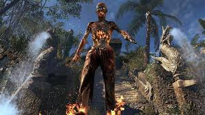
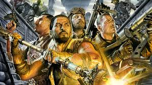

São jogavéis nesse mapa, Tank Dempsey, Edward Richtofen, Takeo Masaki, Nikolai Belinski e, após o easter egg ser completado, Samantha Maxis no corpo de Richtofen.
O jogador começa o jogo na Terra, na área 51 e pode se deslocar a Moon através de um teletransporte. Na Terra estão disponiveis a máquina de Pack-a-Punch (Soco-em-Lata) e aleatóriamente o perk Juggernog ou o perk Speed Cola.
Neste mapa são apresentadas inúmeras novidades como o perk Mule Kick que, anteriormente a um patch que adicionava o perk em todos os mapas, era exclusivo da Moon. Neste mapa também o equipamento Hacker que pode hackear uma porta a caixa ou os perks para que fique mais barato. São apresentados neste mapa também um novo tipo de zumbi, o Astronaut Zombie (Zombie Astronauta) que pode vir com o nome de um amigo ou um apelido de um membro da Treyarch. Neste mapa é necessário P.E.S (Capacete) para sobreviver em áreas da Lua que não contém oxigênio. Este mapa tem 2 novas Wonder Weapons: Wave Gun e a QED (Quantum Etanglement Device) este mapa também marca o retorno do Gersch Device que retorna após sua ultima aparição no mapa Ascension.
A mecânica e física do mapa é incrível pois nas áreas que não contém gravidade nem oxigênio podemos flutuar e morrer se não estivermos com o capacete.
História do mapa Moon:
Neste mapa descobrimos que o teleporte não foi criado pela dupla Dr. Richthofen e Dr. maxis e sim foi criado pela dupla Dr. Richthofen e Dr. Schuster em 1939 bem no início da WWII e com a criação com os testes em nozes eles mostram para Maxis mais ele não acha tão importante e ele pede para ele se preocupar em criar armas.
Bem então ambos continuam no trabalho sozinho e Richthofen decidiu se fazer de cobaia humano para testar teletransportar ele de uma máquina para outra que estava no outro canto da sala, mais porém quando Schuster liga a máquina em vez de ele se teletransportado para a outra máquina ele vai para em uma pequena base na Lua tudo que sabemos até esse ponto é que ela não foi feita por humanos.
Explorando a base Richthofen encontra uma pirâmide chamada M.P.D e quando ele a toca começa escutar vozes de seres que não estavam ali para que estava assistindo e com isso ele acaba sendo teletransportado para uma selva. Schuster sem mais esperanças para recuperar Richthofen está vivo já que ele entrou na máquina e sumiu. E com isso Richthofen aparece abrindo a porta do laboratório falando para Schuster não para com os experimentos do teletransporte e com 115.
Porém Schuster percebe que Richthofen estava meio estranho e maluco e com isso que Richthofen fica esquizofrênico e maluco de como conhecemos hoje.
Dias depois, em uma conferência de pesquisadores, ele apresentou a Dr. Schuster e outra pessoa, o Dr. Groph. Um artefato chamado máquina vrio(não sei a escrita certo então não leve que "vrio" esteja totalmente seja) que ele provavelmente conseguiu naquela selva que ele foi parar, ele diz que esse artefato poderia teletransportar eles ao Aether. Aparentemente esse artefato foi dado a ele por alienígena que seriam as vozes que ele escuta.
Shangri la:

Os personagens jogáveis são: Tank Dempsey, Edward Richtofen, Takeo Masaki e Nikolai Belinski que retornam após a ausência de serem jogáveis no mapa Call of the Dead (Estavam presos em uma porta do mapa e foram soltos após o Easter Egg da Call of the Dead ser feito)
Este mapa introduz a nova Wonder Weapon denominada 31-79 JGb215 ou Baby Gun , Como o nome diz ela não mata o Zombie porém transforma ele em um bebê que pode ser morto apenas com uma facada ou com um tiro de qualquer arma. Neste mapa também são introduzidos dois tipos de Zombies: Napalm Zombies que são Zombies lentos que pegam fogo e se tocarem no jogador o causam um grande dano, e os Shrieker Zombies são Zombies brancos que gritam e correm para te matar. Além disso neste mapa retornam o Monkey Bomb ausentes desde o mapa Kino der Toten e também da Bowie Knife ausente também desde o mapa Kino der Toten. Shangri-La também apresenta um novo tipo Claymore e Boucing Betty do mapa denominada Spikemore.
Neste mapa os perks nascem aleatóriamente exceto o Quick Revive e o Mule Kick.
Historia do mapa Shangri La
Bem quando os 4 saem de Call of The Dead eles vão para em Shangri-la e descobrem que tem uma vila lá que foi vítima de um meteoro de 115.
Antes de tudo esse mapa é dividido em passado e futuro. Iremos começar no passado.
Bem dois exploradores se chamam Brock e Galway vão para Shangri-la buscando um lugar chamado Agartha, neste processo eles estão procurando um templo e no meio disso ocorre um eclipse que com eles começa a nascer zumbis que acaba os matando nada é confirmado mais tudo indica que é o mesmo eclipse que ocorre na Der Riese, dando a entender que o passado deste mapa se passa simultaneamente a Der Riese.
Agora no presente os 4 encontram um rádio próximo do lugar de morte dos 2 com escrituras falando para eles voltarem no tempo exatamente na mesma data do eclipse para impedir que tudo isso aconteça. Porém quando eles voltam para o presente o rádio está em outro lugar indicando que eles conseguiram avançar porém ainda morreram. Com isso eles repetem esse processo repetidas vezes, porém os 2 não sabiam disso e para eles o caminho apenas estava sendo aberto.
Porém em uma das idas ao passado utilizamos 31-79 JGb215 (uma arma encolhedora) no meteoro de 115 diminuindo eles se tornando uma focus stone, pois Richthofen queria a pedra 115, porém quando o meteoro é diminuindo ele acaba caindo dentro de uma sala fechada.
Com isso no futuro eles encontram um último rádio com eles na frente da parede fechando a sala com uma mensagem falando que se eles tivessem um dinamite eles conseguiriam entrar, então os 4 voltam para o passado de novo e colocam uma dinamite na porta.
E os 2 utilizam, e no presente encontramos a porta quebrada com a pedra em cima do altar. E encontramos a última gravação e quando os exploradores tocam na pedra e eles voltam no tempo e recomeça um lupem de entrar no tempo tocar na pedra e voltar no tempo para sempre. Em uma gravação os 2 falam que existe uma placa escrita Richthofen dando a entender que esse local foi uma base no grupo 935 ou um lugar que Richthofen fez suas peripécias.
Origins:

Origins , também conhecido como Excavation Site 64 e Dig Site , é um mapa Zombies incluído no conteúdo para download do Apocalypse para Call of Duty: Black Ops II lançado em 27 de agosto de 2013, para Xbox 360 e em 26 de setembro de 2013, para o PlayStation 3 e PC. É o décimo sétimo (cronologicamente o primeiro na linha do tempo alterada) nível de Zumbis.
Os "personagens originais" ( Dempsey , Nikolai , Richtofen e Takeo ) mais uma vez aparecem como os quatro personagens jogáveis, desta vez como versões alternativas mais jovens de seus eus originais, com grandes diferenças em suas personalidades. Os zumbis têm amarelo-laranja e azul-violeta neste mapa. O mapa apresenta novas Wonder Weapons chamadas Elemental Staffs que aproveitam o poder dos elementos, um novo inimigo chamado Panzer Soldat , o Mark IV Tank , um novo utilitário chamado Der Wunderfizz e novos Power-Ups , como o Sangue de Zumbi .